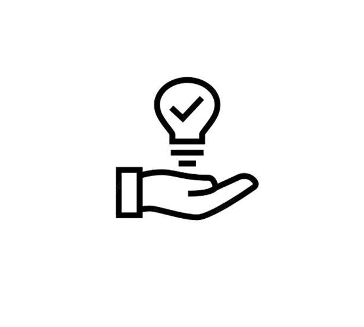

Enrichment Research Paper Overview:
For this written assignment, I had to write a research paper about how cognitive enrichment affects an animal's critical thinking skills.
Technology Used:
- I used Chatgpt and Google Gemini to find credible sources for my assignment.
- I used Easybib to cite my sources in MLA format for the works cited page.
- I also used google docs to write the research paper in MLA format.
Concepts Learned:
- I learned how to use strong transition words to strengthen my writing and to improve the flow of the writing.
- I learned how to format my works cited page with hanging indents and to improbe the overall fluidity of my writing
Challenges & Solutions:
- A problem that I had was the fluidity of my writing as it had a lot of spots that did not flow well or properly. There were a handful of spots that my instructor had pointed out. The solution to this was to ask for help and look at some work of my peers to gather inspiration and understanding on how to improve my work.
- Another problem that I had was reaching the targeted page limit that my instructor had placed. I did not have quite enough information that allowed me to write to that page limit. The solution that I had done was to research another credible source to add on to my project.
- Another problem was that I had a lot of contractions in my assignment such as dont and wont. I had written a majority of my assignment at this point. So the solution that I had was to go back and change every contraction into the expanded version like do not or would not.

Habits of the mind in action
- PersistenceI constantly tried to improve and write my assignment for several days to become proud of the product I would eventually turn in.
- Communication:Talking with my instructor to help and assist me on my writing by giving feedback and useful tips.